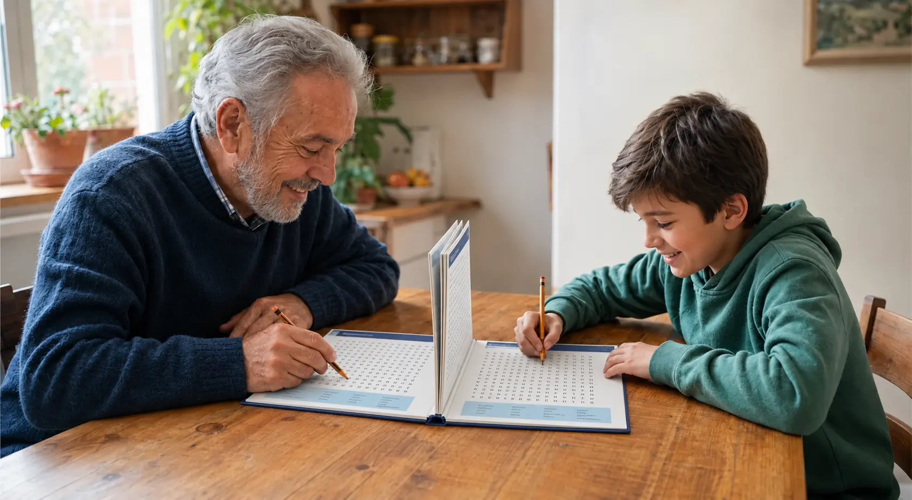
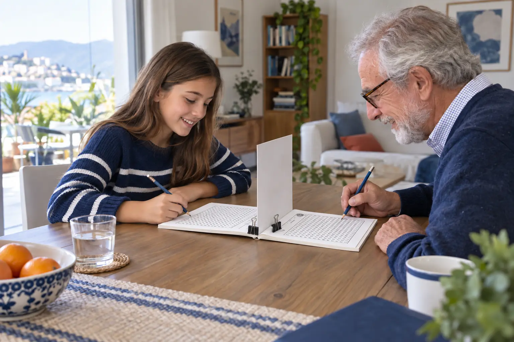
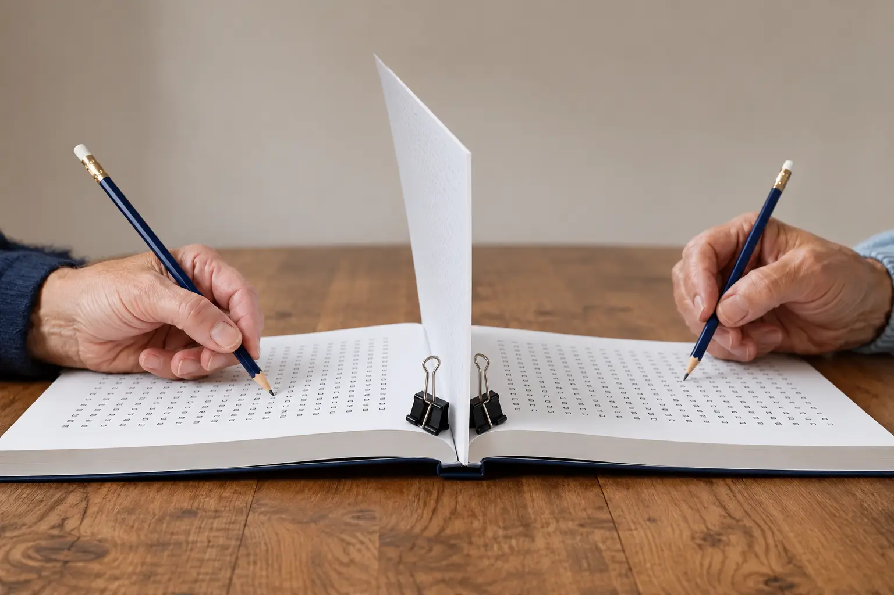
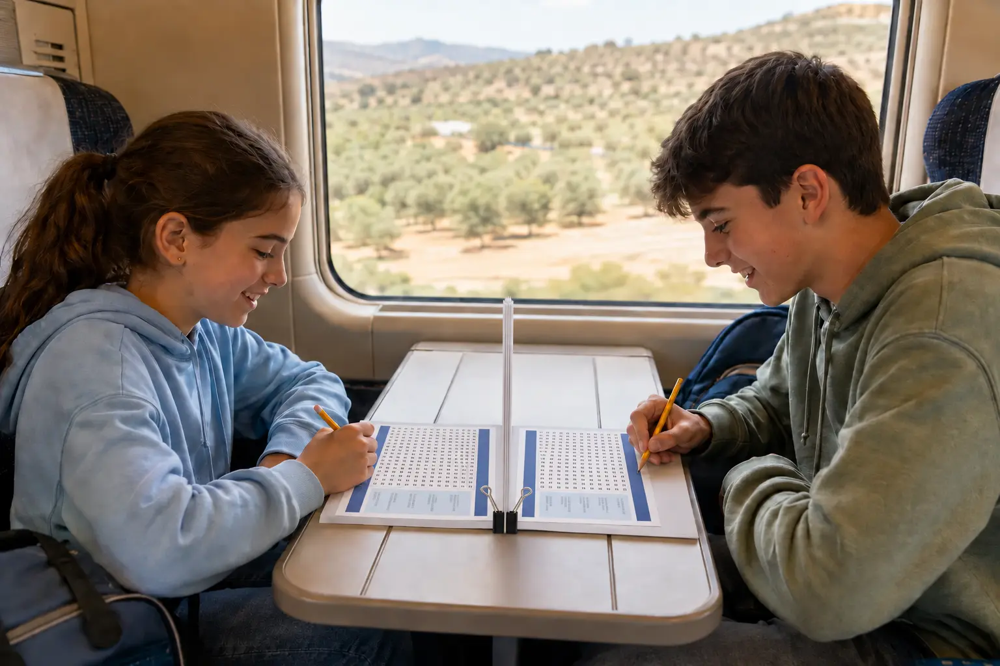
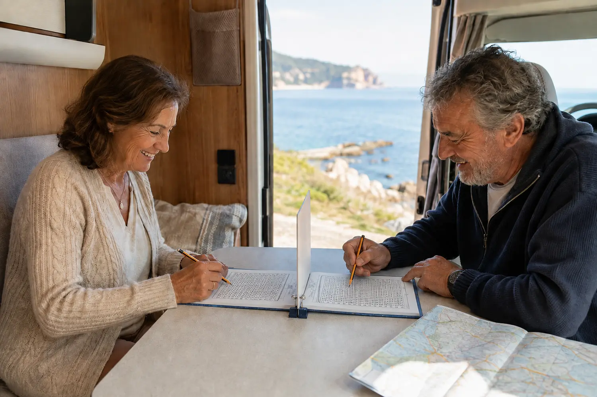

Familias
Abuelos y nietos
Un rato compartido que acerca generaciones.

La colección que convierte un libro en un juego para dos
Dos jugadores. El mismo desafío. Una barrera los separa y un buen rato los une.
Mucho más que un pasatiempo
Las sopas de letras siempre han sido individuales. Reto a Dos las transforma en una experiencia compartida.
Busca, compite, ríe y vuelve a intentarlo. Una alternativa a los juegos de mesa tradicionales y a los ejercicios mentales individuales. Todo lo necesario cabe en el propio libro.
Así funciona

Se abre de lado sobre la mesa, justo entre los dos jugadores.
Separad y levantad tres hojas juntas. Sujetadlas con una pinza grande o con una mano para mantener la barrera recta.
Cada persona ve su propio tablero. Gana quien completa antes el reto.
Todos los juegos
Elige el tema que más os guste. Todos los libros comparten la misma mecánica, letra grande, dificultad progresiva y cuarenta partidas completas.
Hay un Reto a Dos para cada momento

Un rato compartido que acerca generaciones.

Tren, vacaciones, casa rural o una tarde de lluvia.
Fácil de organizar por parejas o en pequeños torneos.
Atención, vocabulario y temas educativos dentro de una actividad social.
Una propuesta sencilla para espacios compartidos, asociaciones y zonas comunes.

Entretenimiento portátil para disfrutar en cualquier lugar.
Un regalo que se disfruta acompañado
Un regalo de Navidad original, también perfecto para cumpleaños, el Día de los Abuelos o simplemente para volver a sentarse alrededor de una mesa.
Elegir un libroResidencias, centros de día y profesionales
Forma parejas, entrega un libro y dos lápices. No hay fichas que preparar ni reglas largas que explicar.
Puede jugarse de forma competitiva, cooperativa, por tiempo o como pequeño torneo entre parejas.
Pone en juego la atención, la búsqueda visual y el vocabulario mientras favorece la conversación.
Letra grande, progresión por niveles y sesiones breves que pueden adaptarse a cada grupo.
Cuéntanos qué tipo de centro sois y os orientaremos sobre los títulos más adecuados para vuestro grupo.
Por qué funciona
Preguntas frecuentes
Sí. Cada duelo aparece dos veces con la misma cuadrícula, pero orientado para que cada persona lo lea desde su lado de la mesa.
Se separan y levantan tres hojas juntas para darle mayor firmeza. Pueden sujetarse con una pinza grande o con una mano durante la partida, impidiendo que cada jugador vea el tablero del contrario.
No. Reto a Dos está concebido para unir edades: niños, adultos y mayores pueden jugar juntos gracias a la letra grande y los niveles progresivos.
Un libro de la colección y dos lápices o bolígrafos. No necesita conexión, teléfono, fichas ni materiales especiales.
Cada ficha de la colección tendrá su enlace directo a Amazon en cuanto esté disponible.
Apaga la pantalla. Enciende la partida.